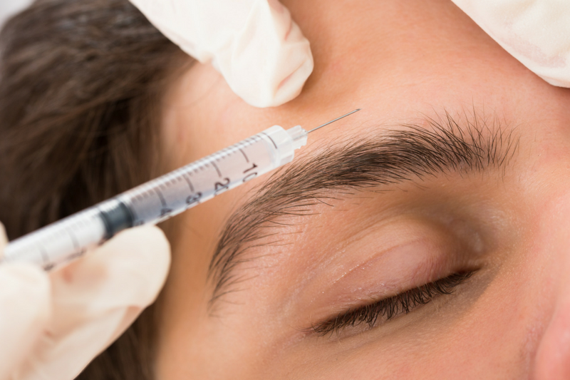

Medicina intervencionista da dor:
Vou te ajudar a se livrar da sua dor sem cirurgia!
Com um tratamento altamente eficaz que engloba medicamentos orais ou injetáveis, abordagem multidisciplinar com uma equipe que inclui, além do médico, fisioterapeuta, nutricionista e psicólogo, por exemplo; procedimentos minimamente invasivos (como infiltrações articulares, bloqueios de nervos etc.).
Agendar Consulta
Especialidades:
-
Intervenção na Dor
Diagnóstico preciso, garantindo alívio imediato ao paciente, com uma abordagem especializada para tratar condições e distúrbios responsáveis pela dor crônica.

-
Dor Musculoesquelética
Tratamento clínico (medicamentos, cannabis medicinal) e intervencionista (infiltrações articulares, bloqueios, técnicas regenerativas - terapias celulares derivadas do próprio paciente).

-
Dor Neuropática
Através de medicamentos específicos, bloqueios anestésicos e neuromodulação periférica para reduzir a sensibilidade nervosa, visando o alívio da dor.

-
Dor Pós-Cirúrgica e Pós-Traumática
Com um tratamento que engloba analgésicos, bloqueios e reabilitação física para aliviar a dor e restaurar a função, prevenindo a cronificação.
-
Dores na Região Craniana e Facial
Por meio de medicamentos, bloqueios e uso de toxina botulínica para aliviar crises e reduzir a frequência de dores crônicas, visando resgatar a qualidade de vida do paciente.
-
Síndromes Dolorosas Complexas
São tratadas com o auxílio da fisioterapia, bloqueios nervosos e neuromodulação periférica para interromper o ciclo de dor e recuperar a funcionalidade.
Sua dor tem solução!
Dr. Gleison Bezerra trata:
-
Dor lombar (lombalgia)
-
Dor cervical (cervicalgia)
-
Síndrome do túnel do carpo
-
Tendinites e bursites
-
Artrose
-
Dor miofascial
-
Neuralgia do trigêmeo
-
Neuropatia diabética
-
Nevralgia pós-herpética (herpes zoster)
-
Dor radicular (ciática / hérnia de disco)
-
Dor crônica após cirurgias
-
Dor pós-amputação
-
Dor após traumas ou lesões
-
Cefaleia tensional crônica
-
Cefaleia em salvas
-
Neuralgia occipital
-
Síndrome de dor regional complexa (SDRC)
-
Síndrome de dor central (causada por AVC ou lesão medular)
Sobre o médico focado no tratamento da dor:
Dr. Gleison Bezerra
Sou um médico intervencionista da dor e minha missão é trazer alívio e esperança para quem convive com a dor crônica. Entendo os desafios que você enfrentou e sei que pode parecer difícil acreditar em uma solução. Estou aqui para mudar essa realidade. Quero ouvir sua história, compreender suas necessidades e, com base nos avanços da medicina, criar um plano de tratamento personalizado. Juntos, podemos alcançar o conforto e a qualidade de vida que você merece. Acredite, viver sem dor é possível!
Agendar Consulta
Você já ouviu falar sobre:
Medicina Regenerativa?
A medicina regenerativa musculoesquelética é uma área inovadora da medicina que visa tratar lesões e doenças que afetam músculos, ossos, articulações, tendões e ligamentos. Ela utiliza métodos avançados para estimular os processos naturais de reparação do corpo, ajudando a regenerar tecidos danificados e aliviar dores, muitas vezes evitando cirurgias invasivas.
Entre as principais abordagens, destacam-se:
-
Terapia com células mesenquimais
Utiliza células-tronco para estimular a regeneração de tecidos musculoesqueléticos danificados.
-
Plasma rico em plaquetas (PRP)
Aplica componentes do sangue para promover a cura e reduzir inflamações.

-
Botóx para Enxaqueca (Toxina Botulínica)
O botóx bloqueia a liberação de neurotransmissores que sinalizam dor, relaxando o paciente.
 -
Proloterapia
Injeta substâncias irritantes para estimular a reparação de ligamentos e tendões lesionados.
-
Neuromodulação Periférica
Usa estímulos elétricos para influenciar os nervos periféricos e tratar diversas condições.

-
Ácido hialurônico
Lubrifica articulações e melhora a mobilidade, sendo útil em casos de artrite.
Você quer viver sem dor?
Com essas abordagens, te ofereço soluções eficazes e menos invasivas para tratar suas condições musculoesqueléticas. Além de aliviar os sintomas, essas técnicas visam restaurar a estrutura e a função dos tecidos afetados, promovendo uma recuperação mais rápida e sustentável.
Agende sua consulta e dê o pontapé inicial para alcançar esse objetivo!
Através da medicina regenerativa eu prometo resgatar sua qualidade de vida.
Quero viver sem dor
Localização 1:
(R. CEL. FRANCISCO BORGES, 111 - TIROL, NATAL - RN, 59020-270)
Agende sua consulta presencial ou online!
Seja avaliado pelo Dr. Gleison Bezerra e resgate sua qualidade de vida através do tratamento mais eficaz e moderno que a medicina oferece para curar a dor.
Agendar consultaLocalização 2:
(AV. SALGADO FILHO, 1718 - SALAS 501/502/503 - TIROL, NATAL - RN, 59022-000)
Seja atendido de forma presencial ou online!
Com a ajuda do Dr. Gleison Bezerra você irá resgatar sua qualidade de vida por meio do tratamento mais eficaz e moderno sem cirurgia.
Agendar consulta